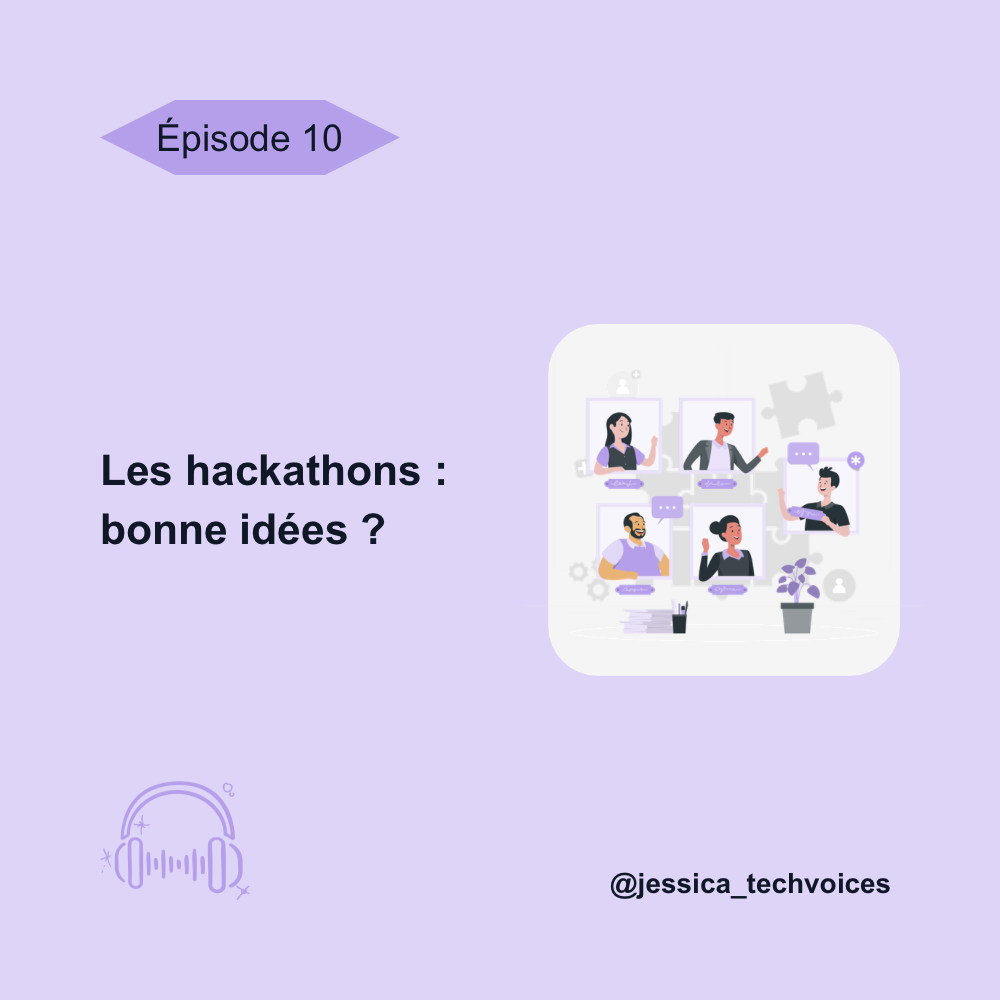
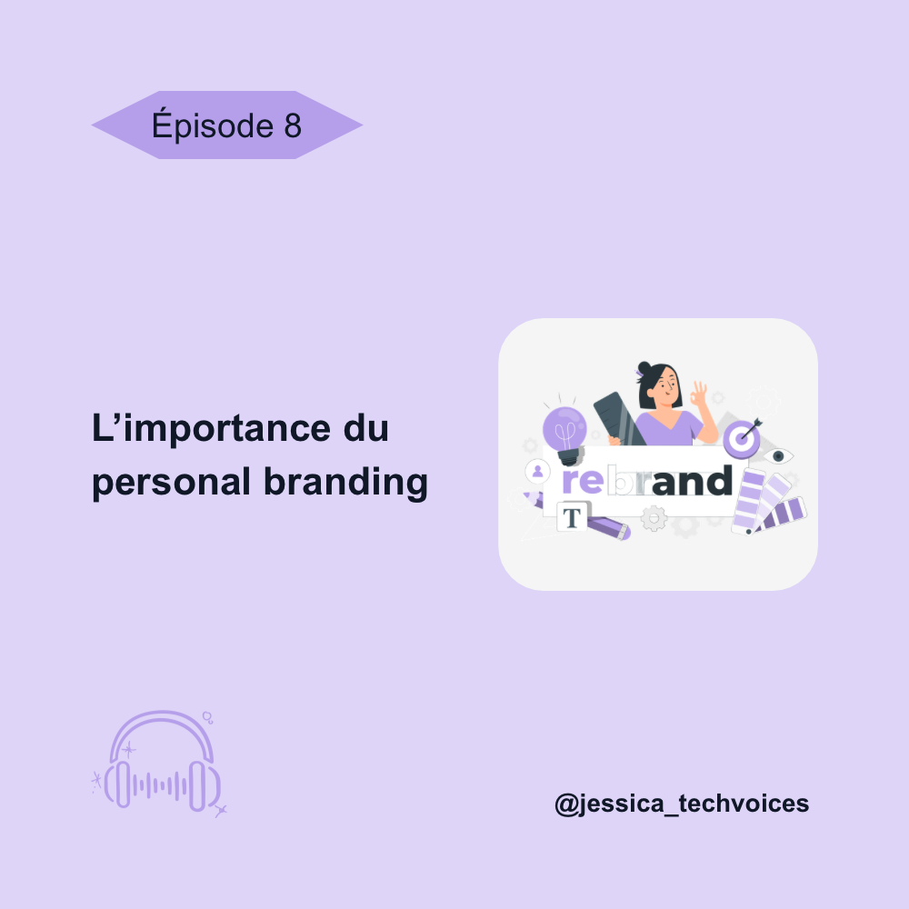
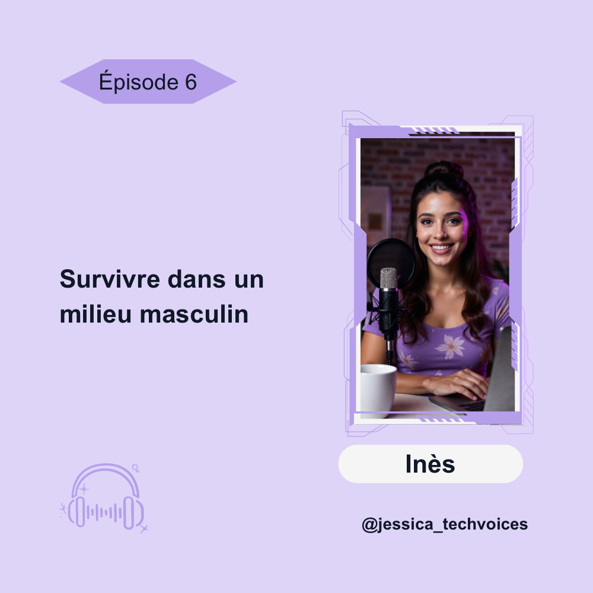
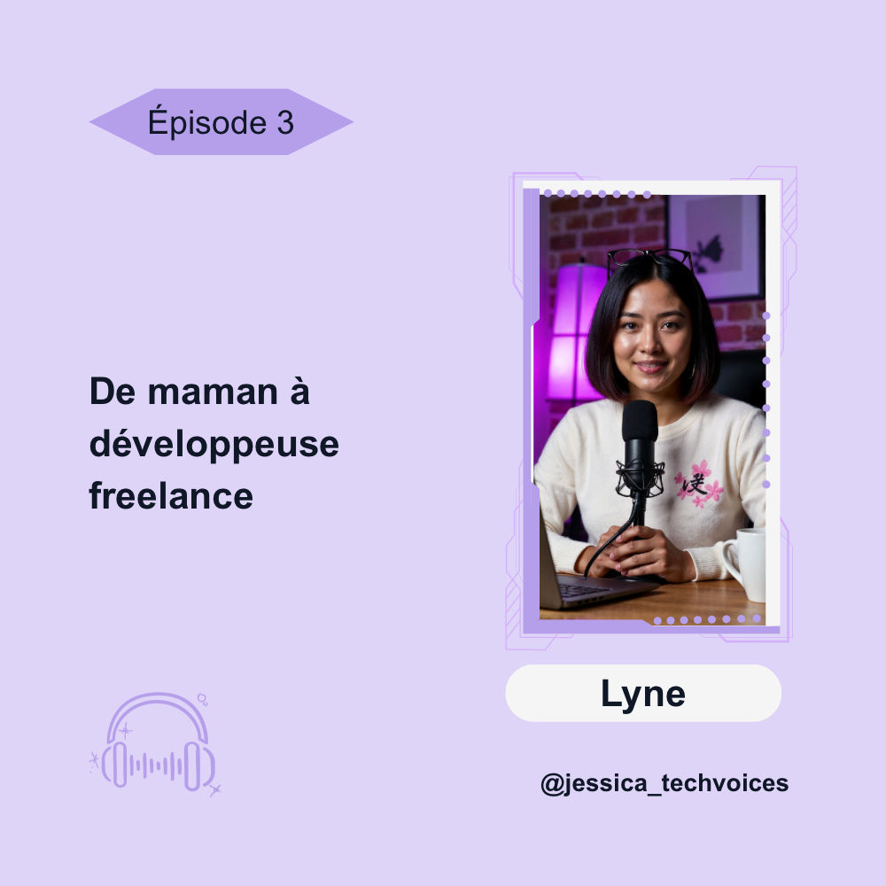
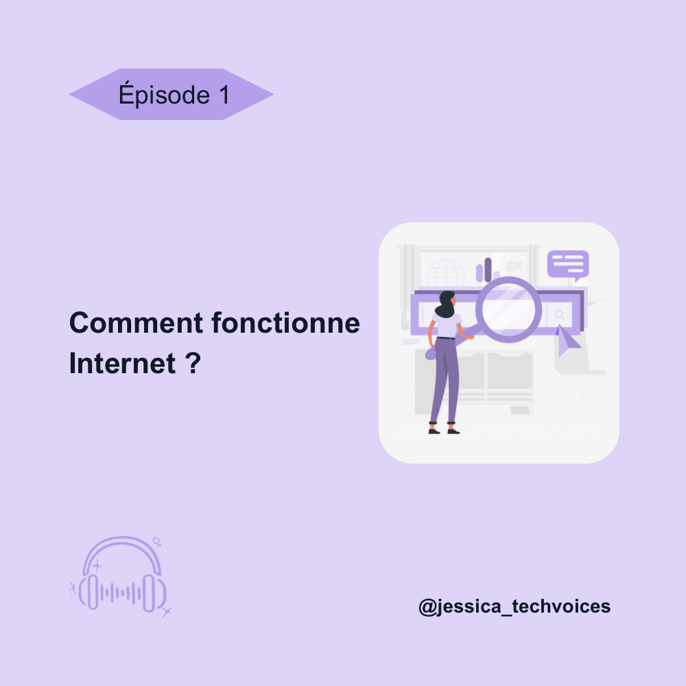

Histoires inspirantes
Découvrez des parcours vrais et motivants, racontés par celles et ceux
qui ont osé se lancer dans la tech. Chaque histoire montre que les
obstacles peuvent se transformer en opportunités et que la passion et
la persévérance ouvrent des chemins inattendus.
Le fil du moment
Tech Voices décrypte les sujets d'actualité dans le numérique et la tech,
des innovations aux débats qui font réfléchir. Entre analyse, opinion et
conseils, cette section vous permet de rester connecté à ce qui bouge dans
le secteur, tout en apprenant à naviguer dans ce monde en constante évolution.
Le coin des savoirs
Apprendre n'a jamais été aussi accessible. Dans cette section, Jessica partage
des notions techniques, des concepts clés et des anecdotes fascinantes sur l'histoire
et les pratiques de la tech. Que vous soyez débutant ou curieux, vous y trouverez
des clés pour mieux comprendre et explorer le numérique.

Date
#10 Les hackathons : bonne idée ?
Durée : 57 min
Description :
Les hackathons sont souvent présentés comme des accélérateurs de
carrière. Mais sont-ils vraiment utiles ? Jessica analyse leurs
avantages, leurs limites, et partage des conseils pour en tirer le
meilleur si vous décidez d'y participer.
→
Date
#9 Créer sa startup sans réseau
Durée : 53 min
Description :
Clara a lancé sa startup sans contacts ni financement initial. Elle
raconte ses débuts difficiles, les erreurs, mais aussi les moments
décisifs qui ont tout changé. Un témoignage puissant pour celles qui
pensent ne pas avoir "les bonnes connexions".
→

Date
#8 L'importance du personal branding
Durée : 40 min
Description :
Aujourd'hui, savoir se présenter est presque aussi important que
ses compétences. Jessica explique comment construire une image
professionnelle authentique, se démarquer et attirer des opportunités
sans se "survendre".
→
Date
#7 Créer son premier projet tech : conseils et erreurs à éviter
Durée : 45 min
Description :
Se lancer dans un projet est une étape décisive. Jessica vous guide à
travers les bonnes pratiques : choisir une idée, rester simple, éviter
le perfectionnisme... et surtout apprendre de ses erreurs pour progresser
rapidement.
→

Date
#6 Survivre dans un milieu masculin
Durée : 52 min
Description :
Inès évolue dans la tech depuis plusieurs années dans un environnement
majoritairement masculin. Elle partage son expérience, les obstacles
rencontrés et les stratégies qu'elle a développées pour s'imposer, rester
elle-même et avancer avec confiance.
→
Date
#5 Les réseaux sociaux pour booster sa carrière
Durée : 44 min
Description :
LinkedIn, Twitter ou TikTok peuvent devenir de véritables leviers
professionnels. Dans cet épisode, Jessica partage des conseils
concrets pour se rendre visible, créer du contenu et saisir des
opportunités sans tomber dans les pièges.
→
Date
#4 Comprendre le rôle d'un UX Designer
Durée : 42 min
Description :
L'UX design est au cœur des produits numériques. Jessica vous
explique ce métier encore méconnu : recherche utilisateur, tests,
wireframes... Un épisode clé pour découvrir une autre facette de la
tech, accessible sans forcément coder.
→

Date
#3 De maman à développeuse freelance
Durée : 47 min
Description :
Lyne raconte comment elle a appris à coder tout en élevant ses
enfants. Entre organisation, doutes et détermination, elle
partage son parcours vers le freelancing et prouve qu'il n'y a pas
d'âge ni de situation idéale pour se lancer.
→
Date
#2 L'intelligence artificielle : menace ou opportunité ?
Durée : 48 min
Description :
L'IA transforme le monde du travail, et particulièrement
la tech. Jessica décrypte les enjeux actuels : automatisation, créativité,
nouvelles opportunités... Faut-il s'inquiéter ou s'adapter ? Un épisode
pour prendre du recul et mieux comprendre ce bouleversement.
→

Date
#1 Comment fonctionne Internet ?
Durée : 51 min
Description :
Avant de coder ou de créer un projet, il est essentiel de comprendre
les bases. Dans cet épisode, Jessica vous explique simplement comment
fonctionne Internet : serveurs, navigateurs, requêtes, DNS... Un guide
accessible pour démystifier ce qu'on utilise tous les jours sans vraiment
le comprendre.
→